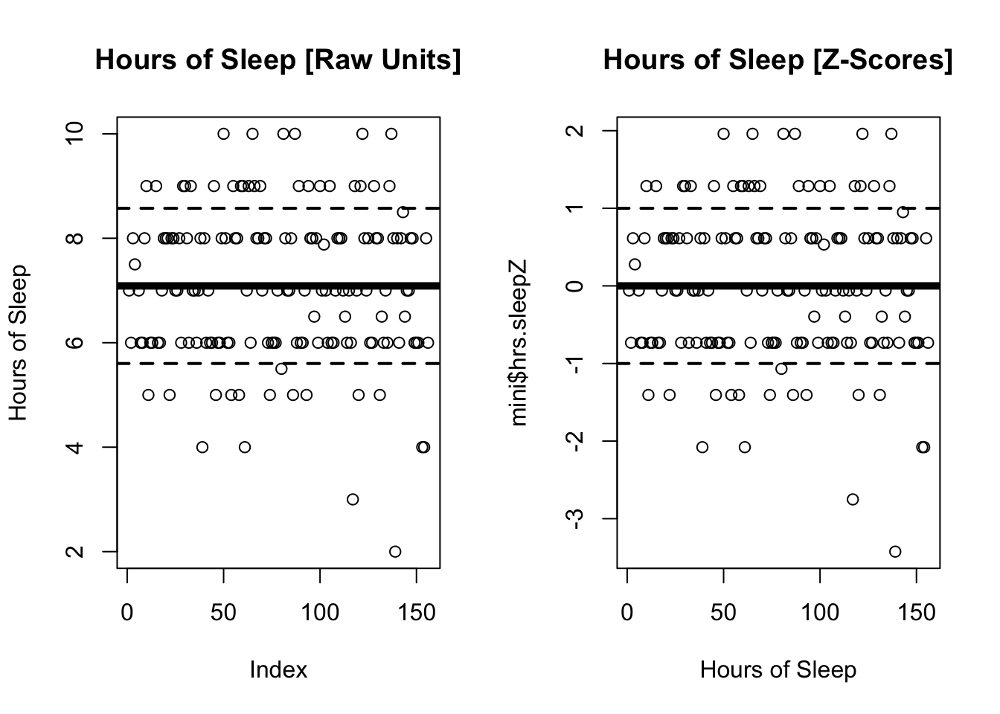
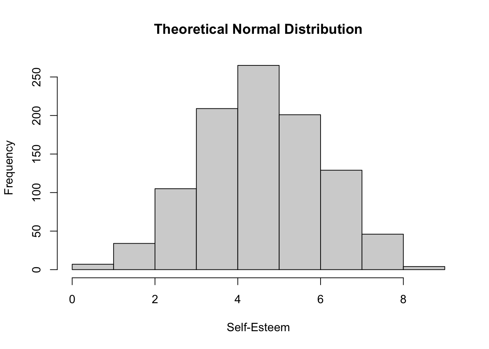
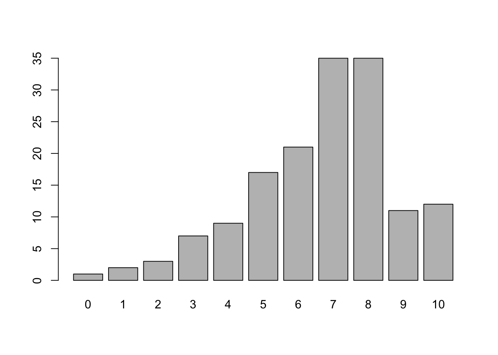
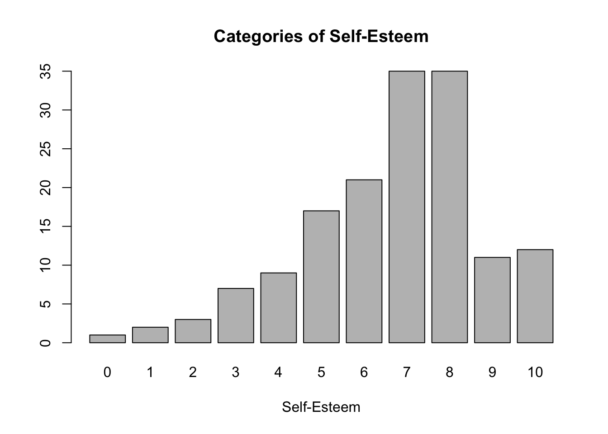

held during normal class; 80 minutes (DSP students get extra time accommodations)
practice exam will post next week
No new R content after today
2/17 is a Holiday
Monday Sections : attend extra GSI office hour OR jump to another GSIs section [email them for heads up]; no penalty if you can’t attend / makeup.
Everyone Else : Business as Usual.
Chapter 5 : Good Science
Good Knowledge : The Scientific Method in Five Easy Steps
Good Research : Scientific Articles and Literature Reviews
Good Measures : Reliability and Validity
Agenda
2:10 - 3:00 | Check-In and Week 3 Review
3:00 - 3:30 | Z-Scores
3:30 - 3:42 | BREAK TIME
3:42 - 4:45 | Likert Scales
4:45 - 5:00 | Project Workshop / Office Hours
Professor Check-In Code
Lab 3 Review : The Mode
Part 1 : The Z-Score (Scale Function)
RECAP : What and Why Z-Score?
The Z-Score
distance from the mean
in units of standard deviation
Why We Care :
gives more context for how different an individual score is from other scores.
example : work for Meta and get paid an above average salary in zuckbucks!!!
how much above average???
wtf is a difference of 10? Is that a lot or a little???
example : your sleep last night (compared to others)?
mean sleep = 7
sd sleep = 1.5
student with 3 hours of sleep; mean = 7; sd = 1.5 . Z-SCORE = (3 - 7)/1.5
removes the units from a variable :
mean of a z-scored variable will always be zero
st of a z-scored variable will always be 1
all variables described in units of standard deviation In R : The Z-Score
Z-Scoring in R
You can calculate the z-score manually, or you can use the scale() function.
## Manual Z-Score : distance from the mean / sdmini$hrs.sleepZM <- (mini$hrs.sleep -mean(mini$hrs.sleep, na.rm = T))/sd(mini$hrs.sleep, na.rm = T)## The scale() functionmini$hrs.sleepZ <-scale(mini$hrs.sleep) # the z-score transformation## Comparing these calculations side-by-sidezcompare <-with(mini, data.frame(hrs.sleep, hrs.sleepZM, hrs.sleepZ)) # organizing our two variableshead(zcompare) # looking at the first few rows
hrs.sleep hrs.sleepZM hrs.sleepZ
1 7.0 -0.05924517 -0.05924517
2 6.0 -0.73228452 -0.73228452
3 8.0 0.61379417 0.61379417
4 7.5 0.27727450 0.27727450
5 NA NA NA
6 7.0 -0.05924517 -0.05924517
It might be easier to look at this in graphical form. In the graph below,
Click Here to Show the Code
## A PICTURE IS WORTH 1000 WORDS : Raw Scores vs. Z-Scores## REMEMBER : IT IS USUALLY BEST TO USE hist() FOR GRAPHING NUMERIC VARIABLES!## I AM USING PLOT TO ILLUSTRATE THE MEAN, STANDARD DEVIATION, AND Z-SCORES.par(mfrow =c(1,2)) # splits the graphics windowplot(mini$hrs.sleep, main ="Hours of Sleep [Raw Units]", ylab ="Hours of Sleep")abline(h =mean(mini$hrs.sleep, na.rm = T), lwd =5) # vertical line of meanabline(h =mean(mini$hrs.sleep, na.rm = T) +sd(mini$hrs.sleep, na.rm = T), # vertical line of mean + sdlwd =2, lty ='dashed')abline(h =mean(mini$hrs.sleep, na.rm = T) -sd(mini$hrs.sleep, na.rm = T), # vertical line of mean - sdlwd =2, lty ='dashed')## Z-SCORED GRAPH. WAIT TO RUN!!!! :)plot(mini$hrs.sleepZ, main ="Hours of Sleep [Z-Scores]", xlab ="Hours of Sleep")abline(h =mean(mini$hrs.sleepZ, na.rm = T), lwd =5) # vertical line of meanabline(h =mean(mini$hrs.sleepZ, na.rm = T) +sd(mini$hrs.sleepZ, na.rm = T), # vertical line of mean + sdlwd =2, lty ='dashed')abline(h =mean(mini$hrs.sleepZ, na.rm = T) -sd(mini$hrs.sleepZ, na.rm = T), # vertical line of mean - sdlwd =2, lty ='dashed')

Miscelaneous Student Questions and Professor Answers
Go Here.
Part 2 : “Normal” Distributions and Likert Scales
RECAP : The Normal Distribution
We think of psychological constructs as continuous variables :
d <-array()for(i inc(1:1000)){ d[i] <-sum(replicate(10, sample(c(0,1), 1))) }hist(d, main ="Theoretical Normal Distribution", xlab ="Self-Esteem", breaks =10)

We Expect This To Occur When :
Multiple Explanations for Variation :
Those Multiple Explanations are Independent :
Below are Two Examples :
plot(as.factor(mini$selfesteem))

RECAP : A Likert Scale
Why Are We Doing This?
The Likert Scale is designed to help approximate a normal distribution, by asking multiple questions about the same variable (Multiple Explanations for Variation!)
Notice, that our single-item measures are not really continuous, but could be considered categories :
plot(as.factor(mini$selfesteem), xlab ="Self-Esteem", main ="Categories of Self-Esteem")

DISCUSSION : Evaluate the Satisfaction With Life Scale [below]
ICE-BREAKER : Best / worst present you received?
Describe features that you notice about this scale (try and use the terms we just learned!)
# of items :
response scale :
positively keyed items :
negatively keyed items :
Do you think this is a valid way to measure this construct?
REASONS NO :
REASONS YES :
How might you use this scale in a study (as an IV or a DV).
In R : Creating a Likert Scale
Let’s create a variable about how GOOD people feel. What items from the mini dataset measure this (the high end and / or the low end)?
names(mini) # looking at the names of our variables.